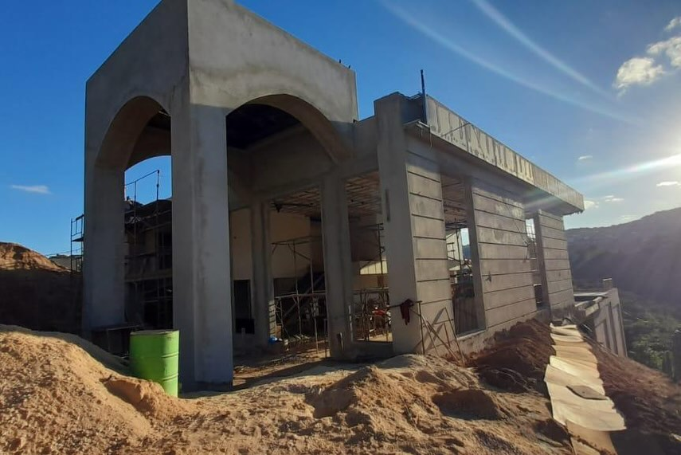
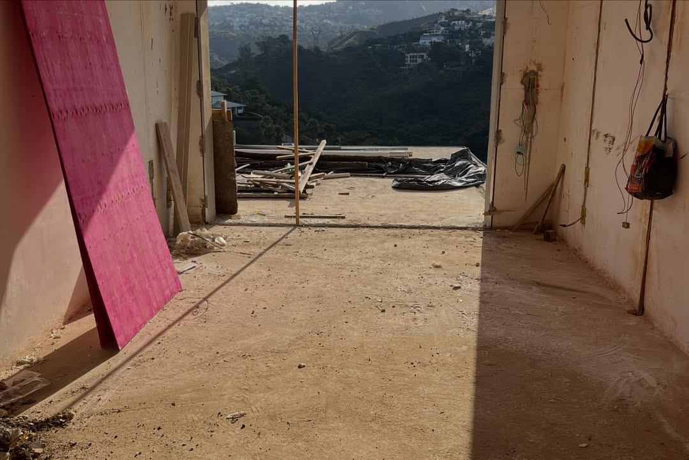
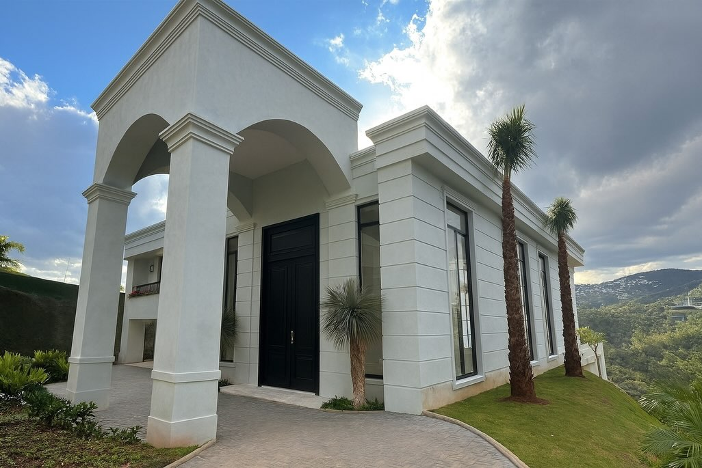
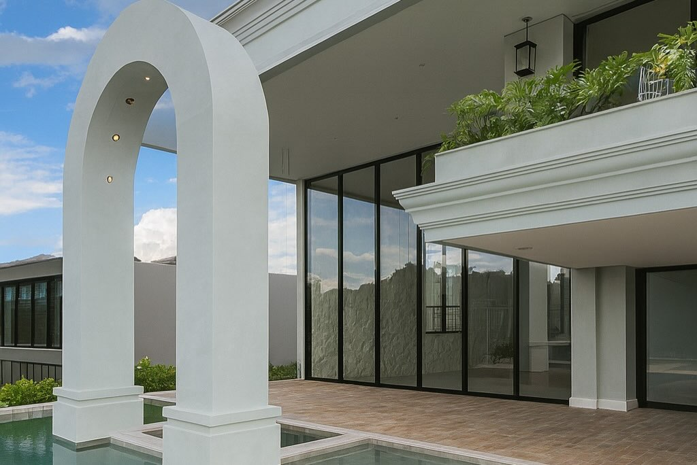
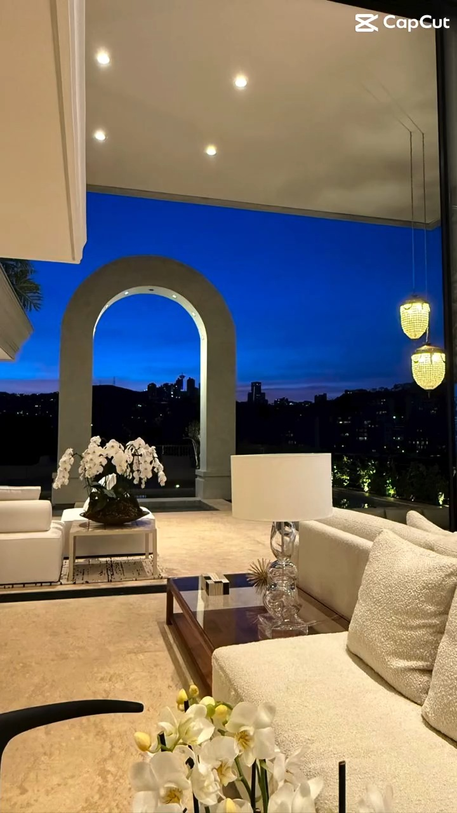
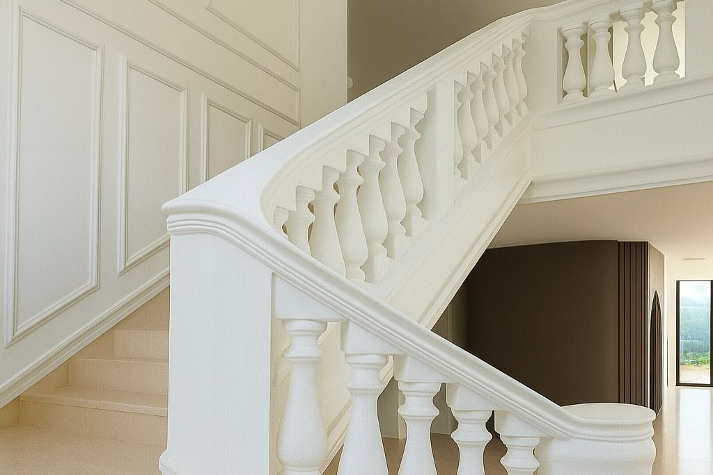

02
Execução completa dos interiores: da fachada de quando a Perla assumiu a obra até a entrega finalizada.






Compare a fachada antes e depois da obra.
Fale com a Perla
Converse com a Perla sobre o que você deseja construir ou transformar.